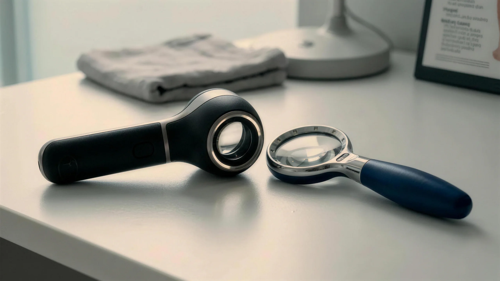

Araç · Muayene öncesi
Estetik uygulama rehberi: muayenede ne konuşabilirim?
Estetik uygulama rehberi, şikâyetinizden yola çıkarak sitedeki bilgileri sizin için sıralar. Konunuzu, iğne konusundaki tercihinizi ve muayenede bilinmesi gereken durumları işaretleyin; ilgili sayfaları ve görüşmede söylemeniz gerekenleri tek ekranda görün. Uygulama önermez, uygunluğa karar vermez; o karar muayenede verilir.

Temsilî görsel · yapay zekâ ile üretildiNereden başlayacağınızı birlikte bulalım
Önce bilgi almak istediğiniz konuları seçin; ardından iğne tercihinizi, yetiştirmek istediğiniz bir tarih olup olmadığını ve muayenede bilinmesi gereken durumları işaretleyin.
- Konular
- İğne tercihi
- Zaman
- Söylenmesi gerekenler
En çok üç konu seçebilirsiniz.
- Mimik Çizgileri ve Kırışıklık
- Hacim Kaybı ve Sarkma
- Göz Altı Koyuluğu
- Akne ve Akne İzi
- Cilt Tonu ve Leke
- Gözenek ve Cilt Dokusu
- Ciltte Nem Kaybı ve Donukluk
- Saç Dökülmesi
- Aşırı Terleme
- Bölgesel Yağlanma
- Selülit Görünümü
- Dövme ve Kalıcı Makyaj
- Önce iğnesiz yöntemleri görmek isterim
- Fark etmez
- Evet, önümüzdeki iki ay içinde
- Hayır, acelem yok
Bu yanıtlar yalnızca size hatırlatma göstermek için kullanılır; hiçbir yere gönderilmez.
- Gebelik ya da emzirme
- Kan sulandırıcı ilaç kullanımı
- Son altı ayda ağızdan akne ilacı
- Sık tekrarlayan uçuk
- Kabarık iz yapma eğilimi
- Son haftalarda bronzlaşma
- Daha önce bir uygulamaya ya da ürüne alerjik tepki
- Hiçbiri
Aşağıdaki uygulamalar sitede bu konularla ilişkilendirilmiş başlıklardır. Hangisinin size uygun olduğu, hatta herhangi birine gerek olup olmadığı muayenede belirlenir.
Her plan öykü ve muayeneyle başlar; aşağıdaki başlıklar bu görüşmede konuşulabilir.
Bazı uygulamaların etkisi haftalar içinde ortaya çıkar, bazılarından sonra birkaç gün kızarıklık ya da şişlik olabilir. Önemli bir gününüz varsa muayeneyi erkenden planlayın ve tarihi hekiminize söyleyin.
Bu dönemde pek çok uygulama ertelenir; planı doğrudan etkiler.
Morarma ve kanama riskini etkiler. İlacı kendi başınıza bırakmayın; adını ve dozunu muayeneye getirin.
Lazer ve bazı işlemlerden önce bekleme süresi gerekebilir; ilacı bıraktığınız tarihi not edin.
Dudak çevresi ve yüz uygulamalarından önce konuşulur; gerekirse ek önlem planlanır.
İğne ve lazer içeren uygulamalarda planı değiştirebilir; daha önceki izlerinizi gösterin.
Lazer ve cihaz uygulamaları çoğu zaman ten eski hâline dönene kadar ertelenir.
Hangi ürüne ya da uygulamaya nasıl bir tepki geliştiğini anlatın; varsa belgeleri getirin.
Rehber, sitedeki bilgileri seçtiğiniz konulara göre sıralar; tanı koymaz ve uygulama önermez. Kesin değerlendirme yüz yüze muayenede yapılır.
- Mimik Çizgisi Uygulaması Fazla çalışan bir kasın hareketini ya da ter bezlerinin uyarımını geçici olarak azaltmak
- Gençlik Aşısı (Skinbooster) Hacim eklemeden cildin nem tutma kapasitesini ve doku kalitesini desteklemek
- Dolgu Uygulamaları Hacmi azalmış bir alanı desteklemek ya da dudak, çene, elmacık ve göz altı gibi hatlarda geçişi yumuşatmak
- Fraksiyonel Lazer Deride kontrollü mikro alanlar oluşturarak cilt dokusu, iz ve leke görünümünde yenilenmeyi uyarmak
- HIFU — Ameliyatsız Sıkılaştırma Odaklanmış ultrasonla derindeki destek dokusuna enerji vererek sıkılıkta görünür bir değişim hedeflemek
- Sıvı Yüz Germe Yüzün bütününde hacim ve destek dengesini birden fazla noktadan, aşamalı olarak ele almak
- Biyostimülan Uygulamalar Dokunun kolajen üretimini zamana yayarak uyarmak; hacimden çok destek ve sıkılık hedeflenir
- Altın İğne Radyofrekans Mikroiğneyle derin katmana radyofrekans enerjisi vererek iz, gözenek ve gevşeklikte onarım yanıtı başlatmak
- Mezoterapi Cildin nem dengesinde ve yüzey dokusunda sınırlı, kademeli bir düzelme
- Doku Onarım Uygulaması Özellikle ince ve yorgun görünen ciltte, dokunun kendi yenilenme süreçlerini desteklemek
- Dolgu Uygulamaları Hacmi azalmış bir alanı desteklemek ya da dudak, çene, elmacık ve göz altı gibi hatlarda geçişi yumuşatmak
- Fraksiyonel Lazer Deride kontrollü mikro alanlar oluşturarak cilt dokusu, iz ve leke görünümünde yenilenmeyi uyarmak
- Altın İğne Radyofrekans Mikroiğneyle derin katmana radyofrekans enerjisi vererek iz, gözenek ve gevşeklikte onarım yanıtı başlatmak
- PRP Kişinin kendi plazmasıyla dokunun onarım süreçlerini desteklemek
- Karbon Peeling Gözenek görünümü, yağlanma ve donuklukta yüzeysel bir yenilenme sağlamak
- Pico Lazer ile Leke Derinin üst katmanlarındaki pigment birikimini hedefleyerek lekenin açılmasını amaçlamak
- Mezoterapi Cildin nem dengesinde ve yüzey dokusunda sınırlı, kademeli bir düzelme
- Karbon Peeling Gözenek görünümü, yağlanma ve donuklukta yüzeysel bir yenilenme sağlamak
- Karbon Peeling Gözenek görünümü, yağlanma ve donuklukta yüzeysel bir yenilenme sağlamak
- Altın İğne Radyofrekans Mikroiğneyle derin katmana radyofrekans enerjisi vererek iz, gözenek ve gevşeklikte onarım yanıtı başlatmak
- Fraksiyonel Lazer Deride kontrollü mikro alanlar oluşturarak cilt dokusu, iz ve leke görünümünde yenilenmeyi uyarmak
- İğnesiz Mezoterapi Etken içeriği iğne kullanmadan, elektroporasyonla cildin yüzeye yakın katmanlarına iletmek
- Gençlik Aşısı (Skinbooster) Hacim eklemeden cildin nem tutma kapasitesini ve doku kalitesini desteklemek
- Mezoterapi Cildin nem dengesinde ve yüzey dokusunda sınırlı, kademeli bir düzelme
- İğnesiz Mezoterapi Etken içeriği iğne kullanmadan, elektroporasyonla cildin yüzeye yakın katmanlarına iletmek
- Doku Onarım Uygulaması Özellikle ince ve yorgun görünen ciltte, dokunun kendi yenilenme süreçlerini desteklemek
- Saç Mezoterapisi Saç kökünün yerleştiği saçlı deri ortamını besleyici içerikle desteklemek
- Saç PRP Kişinin kendi plazmasıyla kıl kökünü çevreleyen dokunun onarım süreçlerini desteklemek
- Eksozom Hücreler arası sinyal molekülleriyle cilt ve saçlı deride onarım süreçlerini desteklemek
- Mimik Çizgisi Uygulaması Fazla çalışan bir kasın hareketini ya da ter bezlerinin uyarımını geçici olarak azaltmak
- Bölgesel Lipoliz Gıdı, karın, bel ya da bacak iç yüzü gibi, diyet ve egzersize direnen sınırlı yağ birikimlerini azaltmak
- Selülit Görünümü Cilt yüzeyindeki dalgalı ve çukurlu görünümü, birden fazla yöntemi birleştiren bir planla hafifletmek
- Selülit Görünümü Cilt yüzeyindeki dalgalı ve çukurlu görünümü, birden fazla yöntemi birleştiren bir planla hafifletmek
- Bölgesel Lipoliz Gıdı, karın, bel ya da bacak iç yüzü gibi, diyet ve egzersize direnen sınırlı yağ birikimlerini azaltmak
- Mezoterapi Cildin nem dengesinde ve yüzey dokusunda sınırlı, kademeli bir düzelme
- Pico Lazer ile Dövme Silme Mürekkep parçacıklarını küçülterek dövme görünümünün seanslar boyunca açılmasını hedeflemek
Nasıl çalışır?
Rehber neye dayanıyor?
Rehberdeki her bağlantı, sitedeki cilt sorunu sayfalarında hekimin o konu için andığı uygulamalardan derlenir. Yeni bir bilgi eklemez; dağınık sayfaları sizin seçiminize göre bir araya getirir.
Konudan başlar
Leke, akne izi, sarkma, saç dökülmesi ya da dövme gibi on iki başlıktan en çok üçünü seçersiniz. Her biri ilgili cilt sorunu sayfasına bağlanır.
Tercihinizi dikkate alır
İğnesiz yöntemleri önce görmek isterseniz lazer ve cihaz uygulamaları başa alınır; diğerleri listeden çıkmaz, yalnızca sırası değişir.
Hatırlatma çıkarır
Gebelik, kan sulandırıcı kullanımı ya da yakın zamanda bronzlaşma gibi durumları işaretlerseniz muayenede söylemeniz gerekenler ayrıca listelenir.
Sınırları
Neden "size şu uygun" demiyoruz?
Aynı şikâyetin arkasında birbirinden çok farklı nedenler olabilir. Yanakta görünen bir koyuluk güneş lekesi de olabilir, sivilce sonrası iz ya da hormonlarla ilişkili bir renk değişikliği de; her birinin planı ayrıdır. Bu ayrım ancak cilt yakından incelendiğinde ve öykünüz dinlendiğinde yapılabilir.
Sağlık hizmetlerinin tanıtımına ilişkin kurallar da kişiyi bir uygulamaya yönlendirmeyi uygun görmez. Bu yüzden rehber yalnızca konuşulabilecek başlıkları gösterir; hangisinin gerekli olduğu, bazen hiçbirinin gerekmediği muayenede netleşir.
Muayeneye hazırlanırken cilt eğilimi testi ve görüşmeye hazırlık notları da işinize yarayabilir.
Sık gelen sorular
Rehber hakkında merak edilenler
Metni hazırlayan ve tıbbi açıdan gözden geçiren: Uzm. Dr. Rahmi Cebeci (Aile Hekimliği Uzmanı · Medikal Estetik Sertifikalı).
Buradaki anlatım herkese yöneliktir; size özel bir teşhis ya da tedavi planı sunmaz, muayenenin yerini tutmaz. Her uygulamanın etkisi kişiye göre farklı olur.